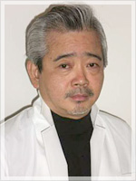

院長紹介
院長紹介

院長プロフィール
- 名前
- 松岡俊夫
- 生年月日
- 昭和３３年１月３０日
- 血液型
- A型
- 出身高校
- 土佐高校（５１期）
- 趣味
- 野球・ゴルフ
略歴
- 昭和６０年３月
- 城西歯科大学（現明海大学歯学部）卒業
- 昭和６０年４月
- 鶴見歯科勤務（神奈川県横浜市）
- ５月
- 一般歯科診療室（第７診療室）配属
- ６１年５月
- 小児歯科診療室配属（小児一般・予防・咬合誘導・矯正
- ６２年１月
- 補綴歯科診療室配属（義歯・インプラント）
- ６３年１月
- 一般歯科診療室（第一診療室室長）配属
- ６３年５月
- 井関歯科勤務（高知県須崎市）
- 平成元年３月
- 六泉寺歯科開設
所属学会等
- 日本顎咬合学会認定医
- 日本高校インプラント学会会員
- 日本糖尿病協会歯科医師登録医
- 日本歯科医師会会員
所属スタディーグループ
- 四国SJCDSociety of JapanClinicalDensityShikoku)
- T.O.S.A(TosaOralScienceAcademy
- KDR(Kochi Dental Research
現職
- 港孕保育園歯科嘱託医
- 土佐中・高等学校歯科嘱託医
- 高知県歯科医師会常務理事
- 高知県社会保険診療報酬請求書審査委員会審査委員
- 高知県警察・高知県歯科医師会連絡協議会幹事
院長ごあいさつ
現代の歯科治療は大きく発展を遂げております。
その中でもインプラント治療において、昔は到底不可能な将来が今日では再生治療法等（骨造成等）を
用いることにより可能になりました。
しかし決して安易な手術ではありません。
私が所属するスタディグループ四国SJCDでは、美と私学を融合させて本来のデンティストリーを追求する会であります。
皆様方に常に最適ん治療をご提案できるよう、日々技術の向上とコミュニケーション、
この２店を大切に今後も歯科診療に努めてまいりたいと思います。
院長ごあいさつ
- 先生が患者さんへの治療で心がけている事は何ですか?
- そうですね、自分の家族や親しい友人に施したいと思うような治療を、いつも患者さんに提案していきたいと思っています。
- その為に努力されている事はどんなことですか?
- はい、最適な治療を提案するためには、常に最新の知識と技術の習得が必要になります。 その為に、多くの学会やスタディーグループに参加し日々研鑽を積んでいます。
- そういえば、先生はたくさんのスタディーグループに所属されていますね。
- 四国規模の勉強会に２つ、県内規模の勉強会に２つ入っていますが、それぞれ違ったコンセプトを持った勉強会です。
四国SJCDでは主にインプラントや審美面について、又 近代臨床歯科研究会では、顎関節や咬み合わせ、矯正等について勉強しています。
TOSAとKDRは高知県内の歯科医師の勉強会で、県外から講師を招いて講演会を開いたり、 保険、経営の勉強や会員同士で症例発表をしたりしながらお互い切磋琢磨しています。
あとは積極的に全国規模、国際規模の学会に出席し、最先端の知識の習得に努めるようにしています。 - 医院の正面のデザインは少し変わっていますね?一部だけコンクリートの
打ちっぱなしになっていますが、これは何か意味があるのでしょうか?? - はい、この建物を設計してくれたのは私の中学からの同級生の一級建築士ですが、 なにかコンセプトのある建物にしたいと色々相談しながら設計しました。 それで、ややもすれば恐いイメージを持たれがちな歯科医院を少しでも優しくみえるようにということで階段をアールにしました。 又建築技術や医療技術は日進月歩であり3wwwwwwwww、我々もいつも完成を目指して努力する気持ちを忘れないようにという意味を込めて、 敢えてコンクリートの打ちっぱなしという一部未完成の部分を残した外観に仕上げました。 提供する医療そのものが未完成であってはいけませんけどね（笑）